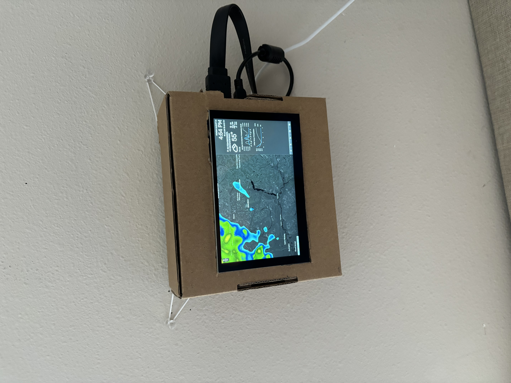
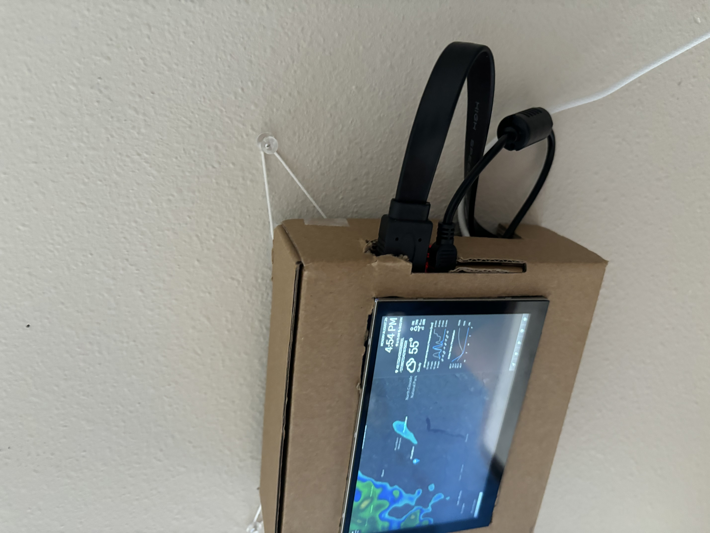
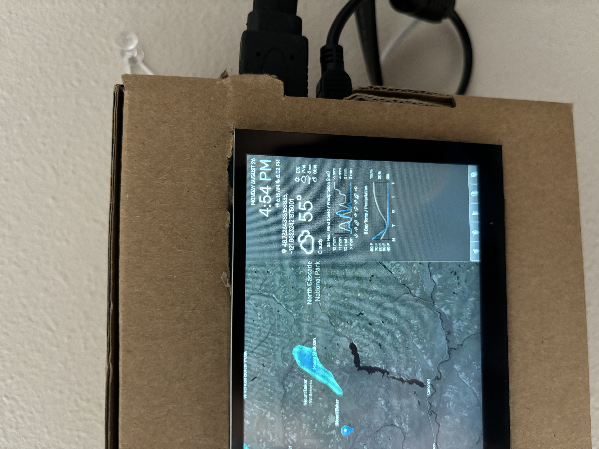

The original goal
The project originally began as an attempt to build digital night-vision goggles. I planned to use a Raspberry Pi with an infrared-sensitive camera, IR illumination, and a small display to create a live low-light video system. The project gave me an opportunity to experiment with Raspberry Pi hardware, cameras, displays, and power electronics.
What went wrong
While developing the goggles, I encountered several hardware integration problems, particularly with camera detection and compatibility. I experimented with multiple components and configurations, including an Arducam IMX477 camera that turned out to be designed for different hardware and wasn't compatible with my setup. After repeated troubleshooting, I decided that continuing to purchase components for the original design wasn't the best approach.
The pivot
Instead of abandoning the project, I looked for another use for the Raspberry Pi and display I already had. I decided to turn the hardware into a weather station.
The finished system uses a Raspberry Pi to retrieve weather information for a specified location through a weather API. Python handles the weather data and presents it through the connected display. This allowed me to reuse the main computing and display hardware while replacing the unsuccessful camera-based system with a software-driven project.
Process
- Started by researching and designing a Raspberry Pi-based night-vision system.
- Experimented with cameras, infrared components, displays, and power hardware.
- Troubleshot camera detection and hardware compatibility problems.
- Decided to repurpose the working Raspberry Pi and display rather than continue replacing components.
- Researched ways to turn the existing hardware into a weather station.
- Set up the Raspberry Pi and weather-station software.
- Connected the system to a weather API to retrieve location-based weather data.
- Configured the display to present the retrieved weather information.
- Tested the finished system and turned the original hardware into a functional standalone project.
Results
The final result was a working Raspberry Pi weather station that retrieves and displays weather information for a specified location. Although the project started as an unsuccessful night-vision prototype, I was able to reuse its core hardware rather than abandoning it. The project ultimately taught me as much about troubleshooting and adapting an engineering design as it did about Raspberry Pi development.
What I'd do differently
I'd add physical environmental sensors for measurements such as temperature, humidity, and atmospheric pressure. That would allow the station to collect its own local data instead of relying entirely on an external weather API. I'd also approach the original night-vision project differently by verifying camera compatibility and testing the camera-to-display pipeline before designing the rest of the system.
Gallery

